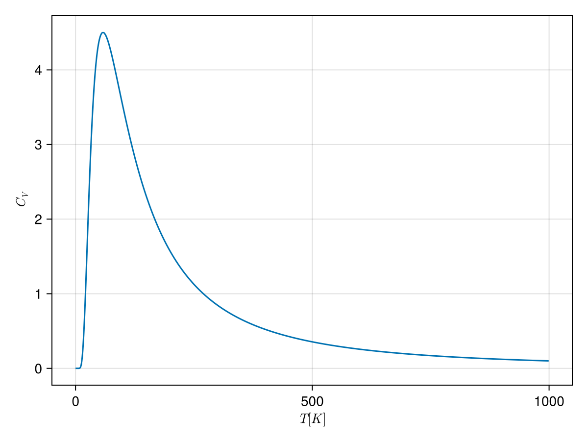
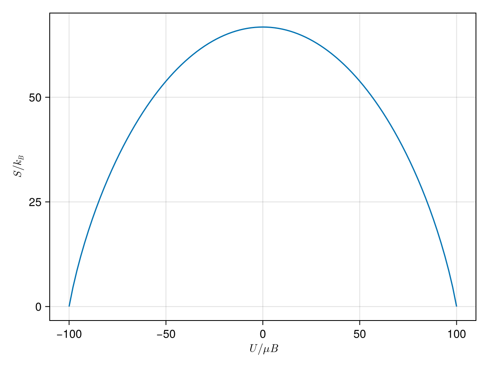
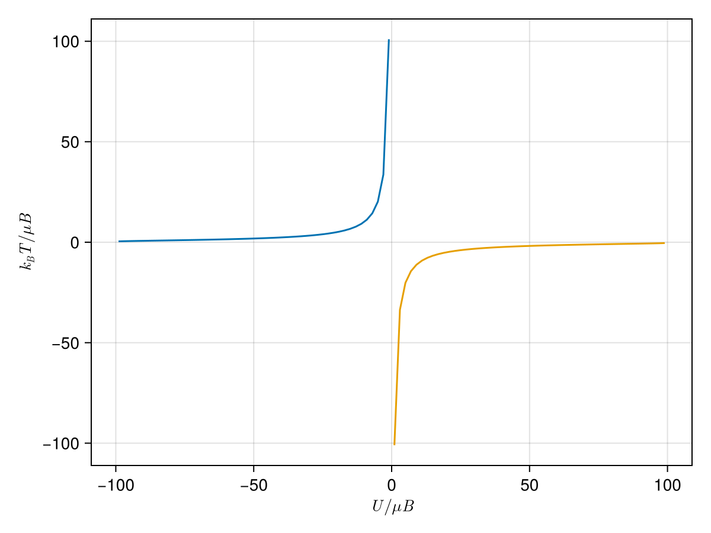

% %
%
\[ \DeclarePairedDelimiters{\set}{\{}{\}} \DeclareMathOperator*{\argmax}{argmax} \]
- 열역학 제 2 법칙은 자연의 근본 법칙이 아닌 확률법칙임. 그러나 큰 시스템에서 그 확률이 압도적이므로 대부분의 경우 근본법칙으로 다루고 있음.
- 이 장의 두 방향
- 엔트로피와 다른 변수-온도, 압력 등-와의 관계를 다룸.
- 두 시스템이 여려 방법으로 상호작용 할 때, 각각에 대해 필요환 관계를 유도함.
24.1 온도
24.1.1 통계역학적 온도
앞서 본 아인슈타인 고체의 경우와 같이 부피와 입자의 개수가 고정되어 있으며 에너지만을 교환하는 두 시스템 \(A,\,B\) 를 생각하자. 두 시스탐이 합쳐진 \([A+B]\) 는 고립계이며 따라서 \(U_A+U_B=\text{constant}\) 이다. \([A+B]\) 의 엔트로피 \(S_\text{total} = S_A+S_B\) 이며 평형상태에서 엔트로피가 최대가 되야 하므로
\[ \dfrac{\partial S_\text{total}}{\partial U_A} = \dfrac{\partial S_A}{\partial U_A} + \dfrac{\partial S_B}{\partial U_B}=0 \tag{24.1}\]
이어야 한다. 그런데 \(U_A+U_B=\text{constant}\) 이므로 위 조건은 다음과 동등하다.
\[ \dfrac{\partial S_A}{\partial U_A} = \dfrac{\partial S_B}{\partial U_B}. \tag{24.2}\]
우선 단위를 보자 \(S=k_B\ln \Omega\) 이므로 \(\text{J/K}\) 단위이다. 따라서 \((\partial S/\partial U)\) 의 단위는 \(K^{-1}\) 이다.
야기서는 부피와 입자의 개수가 고정되어 있는 시스템을 생각하므로 생각할 수 있는 변수는 온도 밖에 없다. 즉 식 24.2 는 온도의 역수와 모종의 관계가 있을 수 밖에 없다. 정확히는 엔트로피 \(S=k_B\ln \Omega\) 로 정할 때 \(\partial S/\partial U\) 가 온도의 역수가 되도록 \(k_B\) 를 곱하여 정한 것이다\(^1\).
- 여기서 중요한 것은 열역학적 온도와 통계역학적 온도의 일치 여부이다. Schroeder 는 일단 “For most practical purpose, the two definitions are equivalent. (pp. 89)” 라고 하고 넘어간다.
연습문제 24.1 (Schroeder 3.2) 온도의 정의를 이용하여 열역학 0 법칙 (the zeroth law of thermodynamics) 를 증명하라.
(해답). 열역학 0 법칙은 아래와 같다.
\((\partial S_A){\partial U_A}_{N_A,\,V_A}= (\partial S_B/\partial U_B)_{N_B,\,V_B}\) 이고 \((\partial S_B){\partial U_B}_{N_B,\,V_B}= (\partial S_C/\partial U_C)_{N_C,\,V_C}\) 이면 당연히 \((\partial S_A){\partial U_A}_{N_A,\,V_A}= (\partial S_C/\partial U_C)_{N_C,\,V_C}\) 이다.
24.1.2 통계역학적 온도의 실제 예
예제 24.1 (아인슈타인 고체의 경우) 아인슈타인 고체에서 \(q\gg N\) 인 경우를 보자 여기서 \(q\) 는 에너지 단위, \(N\) 은 진동자의 개수이다. \(U=\hbar \omega (q+1/2)\) 이며 식 23.21 으로 부터
\[ S = Nk_B\left(\ln q-\ln N +1\right) \]
이므로
\[ \dfrac{1}{T}= \left(\dfrac{\partial S}{\partial U}\right)_{N} = \dfrac{1}{\hbar\omega}\dfrac{Nk_B}{q} \]
이며 따라서 \(U_0 = \frac{1}{2}\hbar \omega\) 에 대해 \(U\) 와 \(T\) 아래와 같은 관계를 거잔다.
\[ U-U_0 = Nk_B T \tag{24.4}\]
예제 24.2 (단원자 분자 이상기체의 경우) 이상기체의 엔트로피(식 23.23) 는 다음과 같다.
\[ S = Nk_B \left[\ln \left(\dfrac{V}{N}\left(\dfrac{4\pi mU}{3Nh^2}\right)^{3/2}\right)+\dfrac{5}{2}\right]. \]
이로부터 \[ \dfrac{1}{T}= \dfrac{3Nk_B}{2U} \tag{24.5}\]
이므로 다음이 성립한다.
\[ U = \dfrac{3}{2}Nk_BT. \tag{24.6}\]
연습문제 24.2 (Schroeder 3.5) 연습문제 23.1 로부터 \(q \ll N\) 일 때의 아인슈타인 고체의 온도에 대한 식을 구하고 에너지를 온도에 대한 함수로 구하라.
(해답). 연습문제 23.1 로부터 \(S=k_B \ln \Omega (N,\,q) = qk_B (1+\ln N - \ln q)\) 임을 안다. 따라서
\[ \dfrac{1}{T}= \dfrac{k_B}{\hbar \omega}\left(\ln \left(\dfrac{N}{q}\right)\right) \]
이며 이로부터 \(U_0 = \frac{1}{2}\hbar \omega\) 에 대해
\[ U=U_0 + \hbar \omega Ne^{-\hbar \omega/k_B T}. \]
연습문제 24.3 (Schroeder 3.7) 연습문제 23.17 의 결과를 이용하여 블랙홀의 온도를 \(M\) 으로 기술하라. 여기서 에너지는 \(Mc^2\) 이다. 태양 질량의 블랙홀에 대해 온도를 구하라. 엔트로피-에너지 그래프를 그리고 이 그래프 모양에 대해 논하라.
(해답). 블랙홀의 엔트로피는 \[ S_{\text{black hole}} = \dfrac{8\pi^2 GM^2}{hc}k_B \]
이므로
\[ \dfrac{1}{T} = \dfrac{\partial S}{\partial (Mc^2)} = \dfrac{1}{c^2}\dfrac{\partial S}{\partial M}= \dfrac{1}{c^2}\dfrac{16\pi^2 GM}{hc}k_B \]
이다. \(M=2.0\times 10^30\,\text{kg}\) 에 대해 \(T=6.1\times 10^{-8}\,\text{K}\).
24.2 엔트로피와 열
24.2.1 열용량 예측
앞장에서 엔트로피를 에너지의 함수로 구할 수 있을 때 온도를 에너지의 함수로 계산하는 법을 알게 되었다. 이 값을 실험과 비교하기 위해서 부피가 일정할때의 열용량인 정적 열용량을 구할 필요가 있다. 정적 열용량의 정의는 식 21.12 의 첫번째 식과 같다. 부피가 일정하므로 \(dU=dQ\) 이며 따라서
\[ C_V = \left(\dfrac{\partial U}{\partial T}\right)_{N,\,V} \tag{24.7}\]
이다. 아인슈타인 고체의 경우 \(q \gg N\) 일 때 식 24.4 로부터
\[ C_V = Nk_B \tag{24.8}\]
이며, 단원자 분자 이상기체의 경우 식 24.6 로부터
\[ C_V = \dfrac{3}{2}Nk_B \tag{24.9}\]
이다. 두가지 경우 정적 열용량은 온도에 무관하며 \(\frac{1}{2}Nk_B\) 에 제곱항 자유도(quadratic degree of freedom) 개수를 곱한 값이다. 이 두 경우 모두 밀도가 낮은 이상기체나 충분히 고온에서의 고체의 경우 실험값과 잘 일치한다.
연습문제 24.4 (Schroeder 3.8) 연습문제 24.2 의 결과로부터 저온 극한에서의 아인슈타인 고체의 열용량을 구하고 온도의 함수로 그래프를 그려라.
(해답). \[ C_V= \left(\dfrac{\partial U}{\partial T}\right)_{N} = \dfrac{(\hbar \omega)^2}{k_BT^2} N e^{-\hbar \omega/k_BT} \]

24.2.2 엔트로피 측정
온도의 정의 식 24.3 로 부터, 열 \(Q\) 를 가하고 부피를 일정하게 유지하면서 다른 형태의 일을 하지 않는다면 엔트로피의 변화는 다음과 같이 쓸 수 있다.
\[ dS = \dfrac{d U}{T} = \dfrac{Q}{T} \qquad (\text{constant volume, no work}). \tag{24.10}\]
온도와 열은 비교적 쉽게 측정 할 수 있으므로 위 식으로부터 다양한 과정에 대한 엔트로피 변화를 얻을 수 있다. 24.4 역학적 평형과 압력 에서는 \(dS=Q/T\) 가 준정적 과정에서는 부피가 변하더라도 사용 할 수 있음을 보일 것이다.
상전이와 같이 열을 가해주더라도 온도가 변하지 않는 상황에서는 \(dS\) 나 \(Q\) 가 미소변화가 아니더라도 식 24.10 을 사용할 수 있다. 온도가 변할 경우, 부피가 일정하다면 등적 열용량을 사용하여 다음과 같이 쓸 수 있다.
\[ dS = \dfrac{C_V}{T}\,dT. \tag{24.11}\]
엔트로피 변화 \(\Delta S=S_f-S_i\) 는 다음과 같다.
\[ \Delta S = S_f-S_i = \int_{T_i}^{T_f}\dfrac{C_V}{T}\,dT \tag{24.12}\]
여기서 관심 있는 온도 구간에서 \(C_V\) 가 일정하다면
\[ \Delta S = C_V \ln \left(\dfrac{T_f}{T_i}\right),\qquad (\text{constant }C_V) \tag{24.13}\]
이다. 물 200 g 을 20 °C 에서 100 °C 로 올렸을 때 \(C_V=200 \,\text{cal/K}\) 이며 식 24.13 로부터 \(\Delta S \approx 200 \,\text{J/K}\) 이다. 이는 가능한 미시상태의 수가 \(e^{1.5 \times 10^{25}}\) 만큼 증가했다는 의미이다. 만약 \(0\,\text{K}\) 까지의 비열과 \(S(0\,\text{K})\) 를 안다면
\[ S_f-S_i = \int_0^{T}\dfrac{C_V}{T'}\,dT' \tag{24.14}\]
을 통해 시스템의 총 엔트로피를 알 수 있다. 그런데 \(S(0\,\text{K})\) 는 얼마인가? 이것에 대한 답이 소위 열역학 제 3 법칙 (the third law of thermodynamics) 이다.
24.2.3 열역학 제 3 법칙
최초는 네른스트(H. Nernst, 1864-1941) 이다. 열화학과 전기화학 데이터를 통해 다음과 같은 결론을 내렸다.
이후 막스 플랑크(M. Planck, 1858-4947) 는 네른스트 버젼을 다음과 같이 개선한다.
여기에서 고려해야 할 것들.
- 거의 모든 물질은 저온에서 고체가 되지만 4He 나 3He 은 매우 낮은 온도에서도 고체가 되지 않는다.
- 내부 평형상태이어야 한다. 유리와 같이 fronen-in distorder 를 가진 물질은 이에 해당되지 않는다.
- 통계역학적으로 보면 \(S=0\) 은 \(\Omega = 1\) 을 의미한다. \(N\) 개의 스핀 0 인 원자로 이루어진 완전 고체를 생각하자. 이 고채의 핵스핀이 \(I\ne 0\) 라고 하자. 외부 자기장이 없다면 핵스핀에 의한 축퇴로 인해 \(S = Nk_B \ln (2I+1) \ne 0\) 이다. 그러나 핵스핀은 고체의 다른 원자의 쌍극자로부터 아주 미약한 자기장이라도 느끼게 되며 따라서 이 축퇴는 깨지고 가장 낮은 에너지상태만 남게 된다.
- 위의 예를 좀 더 살펴본다면 핵스핀에 의한 엔트로피가 유지되는 낮은 온도에서도, 다른 부분에 의한 엔트로피는 0 에 가깝다. 이로부터 사이먼에 의한 열역학 제 3 법칙이 등장한다.
열역학 제 3 법칙으로 부터 여려 결론을 내릴 수 있지만 아직 열역학적 양에 대해 많이 다루지않은 관계로 대표적인 두가지만 짚고 넘어가기로 하자.
1. \(T \to 0\) 일 때 비열은 \(0\) 이다. 즉 \(\displaystyle \lim_{T\to 0} C = \lim_{T\to 0} T\left(\dfrac{\partial S}{\partial T}\right)=0\).
2. 도달 불가능성 : 유한한 단계로 \(T=0\) 까지 냉각 시킬 수 없다.
3. 카르노 엔진의 효율 : 우리는 카르노 엔진의 효율 \(\eta_C = 1-T_l/T_h\) (식 22.7) 임을 안다. 그런데 \(T_l=0\) 이면 \(\eta_C=1\) 이다. 카르노 엔진은 등온팽창(압축)과 단열팽창(압축)의 반복인데 \(0\,\text{K}\) 에서 등온압축은 어떻게 가능할까? 일단 \(0\,\text{K}\) 에서는 열역학적 상태를 변경시킬 수 없으므로 등온 압축 자체가 불가능하다. 실제 열역학 3 법칙이 열역학 2법칙으로 부터 분리된 독자적 법칙이어야 한다고 믿어진 계기는 이것이었다.
연습문제
연습문제 24.5 (Schroeder 3.10) 0 °C 30 g 얼음 큐브가 25 °C 인 부엌의 테이블에 놓여져 있다.
(\(a\)) 얼음이 0°C 에서 녹을 때 얼음 큐브의 엔트로피 변화를 계산하라. 얼음의 잠열은 \(333\,\text{J/g}\) 이다.
(\(b\)) 물의 온도가 0°C 에서 25°C 로 올랐을 때의 물의 엔트로피 변화를 계산하라. 물의 비열 \(C = 4.18\,\text{J/K}\cdot\text{g}\) 이다.
(\(c\)) 얼음이 녹고 물은 온도가 높아진 것에 의한 부엌의 엔트로피 변화를 계산하라.
(\(d\)) 이 과정에서의 우주의 엔트로피 변화를 계산하라. 엔트로피의 순 변화는 양수인가? 음수인가? 아니면 0 인가?. 이것이 우리가 기대하는 바인가?
(해답). (\(a\)) \(\Delta S_{\text{melting}} = (333/273)\times 30 = 36.6 \,\text{J/K}\).
(\(b\)) \(\Delta S_{\text{water}} = C\ln (T_f/T_i) = 11.0 \,\text{J/K}\).
(\(c\)) \(\Delta S_{\text{kitchin, melting}} = -30\times 333 /(25 + 273) = -33.5 \,\text{J/K}\), \(\Delta S_{\text{kitchin, water}} = -30 \times C \times 25 = -10.5 \,\text{J/K}\), 따라서 \(\Delta S_{\text{total, kichin}}= -44.0\,\text{J/K}\)
(\(d\)) 엔트로피의 순 변화 \(\Delta S_\text{total} = 4.6 \,\text{J/K}\) 로 엔트로피는 순증가하였다.
연습문제 24.6 (Schroeder 3.11) 목욕물의 온도를 적절하게 맞추기 위해 55°C 의 물 50 리터와 10°C 의 물 25 리터를 섞었다. 이 물을 섞음으로서 증가한 엔트로피는?
(해답). 평형이 되는 온도는 40°C 이며 \(\Delta S\approx 746 \,\text{J/K}\).
연습문제 24.7 (Schroeder 3.13) 태양이 하늘에 높이 떠 있을때 지표면 \(1\,\text{m}^2\) 당 1000 W 의 일률을 전달한다. 태양의 표면 온도는 6000 K 이고 지구의 표면 온도를 300 K 라고 할 때 다음에 답하라.
(\(a\)) 태양으로부터의 열에너지 전달로 인해 발생하는 지표면에서 1 제곱미터당 엔트로피 변화를 계산하라.
(\(b\)) 당신이 지표면에 1 제곱 미터의 잔디를 기른다고 하자. 혹자는 잔디가 성장하는 것은 무질서한 영양소를 정렬된 생명 형태로 바꾸는 것이기 때문에 열역학 제 2 법칙을 거스른다고 주장 할 수 있다. 어떻게 반박할까?
(해답). (\(a\)) \(\Delta S_\text{sun}=-1000 \times 3600 \times 24 \times 365 /6000 = -5.25\times 10^6\,\text{J/K}\).
\(\Delta S_\text{earth} = \Delta S_\text{sun}\times 6000/300 = 1.05 \times 10^{8}\,\text{J/K}\).
(\(b\)) 지구에서 증가하는 엔트로피 차이는 태양에서 감소하는 엔트로피에 비해 막대하며 (20배) 지구에 도달하는 에너지 중 일부가 잔디의 엔트로피를 감소시킨다고 하더라도 잔디까지 고려한 순 엔트로피틑 증가 할 수 있다.
연습문제 24.8 (Schroeder 3.14) 저온에서의 알루미늄의 1 몰의 열용량은 실험적으로
\[ C_V = aT + bT^3 \]
이며 여기서 \(a=0.00135 \,\text{J/K}^2\), \(b=2.48\times 10^{-5}\,\text{J/K}^4\) 이다. 이로부터 일 몰의 알루미늄의 엔트로피를 온도에 대한 함수로 구하라. \(T=1\,\text{K}\) 와 \(T=10\,\text{K}\) 에서의 엔트로피를 \(\text{J/K}\) 단위와 무단위 값(볼츠만 상수로 나눈 값) 으로 구하라.
(해답). 식 24.12 로 부터 \[ S = \int_0^T \dfrac{C_V}{T}\,dT = aT + \dfrac{b}{3}T^3 \]
이며, \(S(1\,\text{K}) = 1.36\times 10^{-3}\,\text{J/K}\), \(S(10\,\text{K}) = 2.18\times 10^{-2}\,\text{J/K}\).
\(S(1\,\text{K})/k_B \approx 9.84\times 10^{19},\, S(10\,\text{K})/k_B \approx 1.58\times 10^{21}\).
연습문제 24.9 (Schroeder 3.16) 컴퓨터 메모리의 비트(bit) 는 두 다른 상태가운데 하나에 있을 수 있는 물리적 대상이다. 1 바이트(byte) 는 8 비트이며 킬로바이트는 1024 바이트이고, 메가바이트는 1024 킬로바이트며, 기가바이트는 1024 메가바이트이다.
(\(a\)) 당신의 컴퓨터가 1 기가바이트의 메모리를 지우거나 덮어써 기존의 기록을 모두 제거했다고 하자. 이 과정을 통해 어떤 최소한의 엔트로피를 생성하는지 설명하고 계산하라.
(\(b\)) 이 엔트로피가 상온에서 생성되었다면 얼마나 많은 열이 필요한가? 이 열이 상당한 양인가?
(해답). (\(a\)) \(N_\text{bits} = 8\times (1024)^3 = 8.6\times 10^9\). \(\Omega = \text{[상태의 개수]}= 2^{N_\text{bits}}\).
따라서 \(\Delta S = N_\text{bits}k_B \ln 2 = 8.2 \times 10^{-14}\,\text{J/K}\).
(\(b\)) \(Q=T\Delta S = 2.47 \times 10^{-11}\,\text{J}\) 로 매우 적은 양이다.
24.3 상자성
24.3.1 표기법과 물리
스핀 \(1/2\) 입자는 외부 자기장 \(\boldsymbol{B}=B\hat{\boldsymbol{z}}\) 에 대해 스핀이 \(+z\) 혹은 \(-z\) 방향으로 정렬하며 \(+z\) 방향으로 정렬할 때 \(-\mu B\) 를 \(-z\) 방향으로 정렬할 때 \(\mu B\) 에너지를 가진다. \(N\) 개의 스핀 \(1/2\) 입자에 자기장을 가할 때 \(+z\) 방향으로 정렬한 입자의 개수를 \(N_\uparrow\), \(-z\) 방향으로 정렬한 입자의 개수를 \(N_\downarrow\) 라고 하면 \(N= N_\uparrow + N_\downarrow\) 이고 이 시스템의 총 에너지 \(U\) 는
\[ U = -\mu BN_\uparrow +\mu B N_\downarrow = \mu B(N_\downarrow - N_\uparrow) = \mu B(N -2N_\uparrow). \tag{24.15}\]
외부 자기장에 대해 자화율 (Magnetization) \(M\) 은 다음과 같이 정의된다.
\[ M := \mu (N_\uparrow-N_\downarrow) = - \dfrac{U}{B}. \tag{24.16}\]
\(N\) 개 가운데 \(N_\uparrow\) 가 정해졌을 때 가능한 미시상태의 수 \(\Omega(N_\uparrow)\) 는
\[ \Omega(N_\uparrow) = \dfrac{N!}{N_\uparrow ! N_\downarrow !}. \tag{24.17}\]
24.3.2 수치해석적 해와 음의 온도
\(N=100\) 에 대해 \(S/k_B = \ln \Omega\) 를 그려 보면 아래 그림과 같다.

위의 그래프를 보자. \(U/\mu B=N_\downarrow - N_\uparrow\) 이므로 \(N_\downarrow=0\) 일 때, 즉 모든 스핀에 \(+z\) 방향으로 정렬되어 있을 때 엔트로피-에너지 그래프는 매우 가파르다. \(U<0\) 일 때는 에너지가 증가할수록 기울기가 낮아지다가 \(U=0\) 일 때 엔트로피가 최대가 된다. 이 때는 \(N_\downarrow=N_\uparrow=N/2\) 이다. 그러나 \(U>0\) 일 때 \(\partial S/\partial U<0\) 이 되며 이 상태에서는 주변의 \((\partial S/\partial U)>0\) 인 물체에 에너지를 방출하게 된다.
이제 온도 이야기로 넘어가보자. 식 24.3 로부터 \(U=0\) 일 때 이 시스템의 온도는 \(\infty\) 이며, \(U>0\) 일 때 이 시스템의 온도는 통계역학적 정의에 의하면 음수이다. 그리고 음의 온도는 아무리 큰 양의 온도의 물체라도 에너지를 공급하기 때문에 양의 온도보다 더 높은 온도라고 볼 수 있다.

음의 온도는 시스템의 총 에너지가 위로 유계이며, 이로인해 에너지가 증가하면서 가능한 미시상태의 수가 에너지가 증가할수록 감소할 때 발생한다. 가장 좋은 예는 핵 상자성 (nuclear paramagnet) 이다. 이 경우 자기쌍극자는 전자의 스핀이 아니라 핵의 스핀에 의한 것이며, 핵은 아주 높은 온도가 아니라면 운동에너지가 무한히 증가할수 없으므로 외부 자기장에 의한 에너지에 한계가 있다. 또한 어떤 결에서는 핵의 쌍극자에 대한 완화시간(relaxation time) 이 격자 진동과 핵 쌍극자의 완화시간보다 매우 짧기 때문에, 이 경우 짧은 시간 스케일에서 핵의 쌍극자는 격자 진동으로부터 독립된 고립계처럼 행동한다. 앞서에서 본 것 처럼 이런 시스템에서 모든 쌍극자가 자기장과 같은 방향으로 정렬되는 상태부터 시작하여 자기장을 역전시킨다면 음의 온도를 얻게 된다. 이 실험은 1951년도에 Edward M. Purcell 과 R. V. Pound 에 의해 1951 년도에 플루오린화 리튬 결정으로 수행되었다.
24.3.3 해석적 해
이제 \(N\) 값이 매우 클 경우에 대한 해를 구해보자. 식 24.17 로부터
\[ \begin{aligned} S/k_B &= \ln N! - \ln N_\uparrow! - \ln (N-N_\uparrow)! \\[0.3em] &\approx N \ln N - N_\uparrow \ln N_\uparrow - (N-N_\uparrow) \ln (N-N_\uparrow). \end{aligned} \tag{24.18}\]
\(U=\mu B(N-2N_\uparrow)\)(식 24.15) 이므로,
\[ \begin{aligned} \dfrac{1}{T} & =\left(\dfrac{\partial S}{\partial U}\right)_{N,\,B} = -\dfrac{1}{2\mu B}\left(\dfrac{\partial S}{\partial N_\uparrow}\right) = \dfrac{k_B}{2\mu B}\ln \left(\dfrac{N_\uparrow}{N-N_\uparrow}\right) \end{aligned} \tag{24.19}\]
이며
\[ \dfrac{1}{T}= \dfrac{k_B}{2\mu B}\ln \left(\dfrac{N-U/\mu B}{N+U/\mu B}\right) \tag{24.20}\]
이다. 이 식을 \(U\) 에 대해 구하면
\[ U=\mu N B \left(\dfrac{1-e^{2\mu B/k_BT}}{1+e^{2\mu B/k_B T}}\right) = -\mu N B \tanh \left(\dfrac{\mu B}{k_BT}\right) \tag{24.21}\]
이며, 따라서 자화율은
\[ M = -\dfrac{U}{B} = \mu N \tanh \left(\dfrac{\mu B}{k_B T}\right). \tag{24.22}\]
따라서 \(T\to \infty\) 일 때 \(M=0\) 이다. 또한 일정한 자기장에서의 비열 \(C_B\) 를 구하면
\[ C_B = \left(\dfrac{\partial U}{\partial T}\right)_{N,\,B} = Nk_B \dfrac{(\mu B/ k_B T)^2}{\cosh^2 (\mu B/ k_B T)} \tag{24.23}\]
이며 \(T\to \infty\) 에서 \(C_B \to 0\) 이다.
실제로 상자성에서는 전자나 핵에 의한 자기쌍극자이다. 전자의 경우 궤도각운동량 혹은 스핀각운동량에 의한 것이며 가능한 상태의 수는 작은 자연수이다. 특정한 상황에서는 전자의 궤도각운동량값이 주위 원자에 의해 0 이 되며 이를 orbital quenching 이라고 한다. 이 경우에는 전자의 스핀각운동량만 살아남는다. \(S=1/2\) 일 경우는 2개의 상태만 가능하며 이것이 우리가 지금까지 살펴온 것이다. 전자의 경우 \(\mu\) 값은 보어 마그네톤 (Bohr magneton) \(\mu_B\) 값을 사용한다.
\[ \mu_B = \dfrac{e\hbar}{2m_e} = 9.274 \times 10^{-24}\,\text{J/T} = 5.788 \times 10^{-5}\,\text{eV/T}. \tag{24.24}\]
자기장 \(1 T\) 의 경우 \(\mu_B B \approx 5.8 10^{-5}\, \text{eV}\) 이며 \(k_B (300\,\text{K}) \approx 0.025\,\text{eV}\) 이므로 \(k_B T_\text{room} \gg \mu B\) 이다. 이 경우 식 24.22 는
\[ M \approx \dfrac{\mu_B^2 N B}{k_BT} \qquad (k_B T \gg \mu_B B) \tag{24.25}\]
이다. \(M\propto 1/T\) 이며 이를 퀴리 법칙 (Curie’s law) 라고 한다.
연습문제
연습문제 24.10 (Schroeder 3.20) DPPH 와 같은 이상적인 2상태 상자성 물질을 생각하자. 여기서 \(\mu = \mu_B\) 이다. 2.06 T 의 자기장을 걸었고 가장 낮은 온도는 2.2 K 이다. 에너지와 자화율, 엔트로피를 구하고 가능한 최대값에 대한 비율로 표현하라. 가능한 자화의 99% 를 얻기 위해서 무엇을 해야 하는가?
(해답). 2.06 T, 2.2 K 에서 생각한다. \(\mu_B \times 2.2\,\text{T}/(k_B \times 2.2 \,\text{K})=0.629\). \(U_\max = \mu_B NB\) 이며 \(U/U_\text{Max}=-0.557\), \(M/M_\text{max}=0.557\), \(N_\uparrow=0.779 N\), \(S_\text{Max}= k_B\ln 2\) 이므로 \(S/S_\text{Max}=0.762\).
99% 자화를 얻기 위해서는 \(\mu_B B/k_B T\approx 2.65\) 이어야 하며 자기장을 4.2배 증가시킨 8.65 T 로 올리거나 온도를 0.5 K 로 낮추어야 한다.
연습문제 24.11 (Schroeder 3.22) 2상태 상자성의 엔트로피를 온도의 함수로 표현하면 \(x=\mu B/k_BT\) 에 대해
\[ S=Nk_B \left[\ln (2 \cosh x) - x \tanh x\right] \]
임을 보여라. 이 때 \(T\to 0\) 과 \(T \to \infty\) 를 논하라.